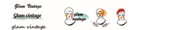
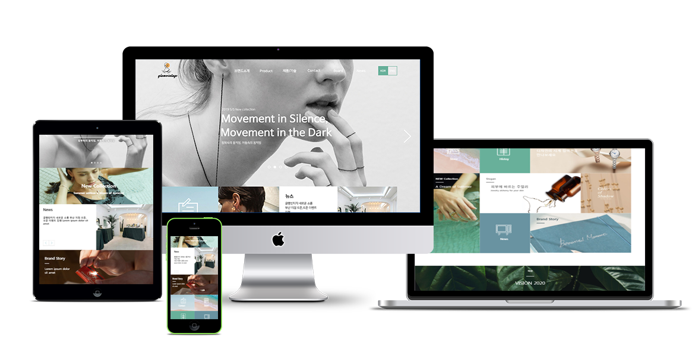

악세사리 브랜드를 직접 창작하여 컨셉을 구축하여 홈페이지를 디자인, 퍼블리싱하였습니다 미디어 쿼리를 활용하여 pc,tablet,mobile 세가지 버전으로 모두 다른 레이아웃으로 구성하였습니다.
악세사리 브랜드 소개 페이지이다
보테니컬하고 빈티지한 감성적인 컨셉의 디자인을 선보인다
브랜드 소개와 컬렉션 컨셉을 설명하는 것에 중점을 두어
레이아웃을 구성하였다
메인화면에는 슬라이드 형태의 백그라운드 위로
배너식의 레이아웃을 구성하여 서브페이지로 이동할 수 있도록 하였다
브랜드가 추구하는 컨셉과 방향성을 잘 설명할 수 있도록 아이콘을 제작하여 배치하였고 강조할 수 있도록 모션효과를 넣었다
브랜드에 대해 소개하고 컨셉에 대해 설명하는 about, 브랜드 소식을 알아볼 수 있는 news,브랜드에 대해 문의할 수 있는contact,브랜드의 시즌별 컬렉션과 컬렉션 제품들을 만나볼 수 있는 collection으로 구성하였다
main page는 와이드형태의 슬라이드 위로 여러개의 배너형식으로 레이아웃을 구성하였고, 비전 영역은 페럴럭스 형식으로 구성하여 백그라운 이미지를 삽입하였다. 중간중간 컨텐츠를 슬라이드 형식으로 구성하여 소비자가 직접 넘겨보며 확인할 수 있도록 구성하였다. sub page는 페이지 별로 배너를 구성하고 그 아래로 탭형식의 하위 메뉴들을 구성하여 접근성이 용이하도록 구성하였다.
빈티지한 악세사리를 판매하는 브랜드라는 컨셉에 맞게 빈티지 품으로 대표적인 석고상에 색을 입혀 일러스트를 제작하였고 타이포그래피는 필기체를 사용해 감성적인 무드를 더하였다
채도가 빠진 따뜻한 색감들을 사용해 부드러운 무드로 디자인하였다
반응형 웹페이지 악세사리 브랜드 소개페이지
css 미디어 쿼리를 사용하여 반응형 구조로 설계하였다 컬렉션 소개와 뉴스 중요도 순으로 레이아웃을 재 구성하고,메뉴를 토글메뉴로 변경하였다
로고는 일러스트를 제외하고 타이포그래피로만 구성하여 간결하게 표현하였다.
max-width:960px 768X838size
레이아웃을 모바일 버전으로 새롭게 구성하여 모바일버전에서만 보일수 있도록 구성하였다. 브랜드에 대한 소개와 컬렉션 컨셉을 중점으로 레이아웃을 단순화하였다.
425X838size